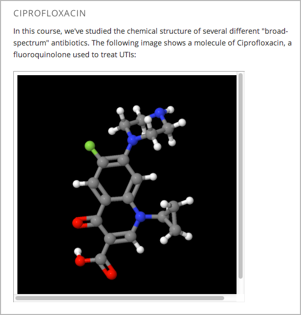

系统提供了可以在关于分子讨论中使用两个工具：
这两个工具都用到了 JSmol, 一个由Jmol开发的基于JavaScript的分子浏览器。 (你不需要去下载这个工具，系统会自动使用它。) 有关JSmol的详细信息，请参阅 JSmol.
下图显示了在一个课程中的分子浏览器工具：
Note
要创建一个分子浏览器，你必须获得将文件上传到第三方文件托管网站的权限，例如 Amazon 的 Web Services Simple Storage Service (AWS S3)。 当你创建了分子浏览器，你会上传一个包含大量文件的文件夹到文件托管网站。
创建分子浏览器需要几个步骤:
创建或下载你要显示分子的 .mol 文件。 你可以从 BioTopics website 下载各种 .mol文件。 将文件保存在一个你可以很容易地找到它的地方。
从edX上下载 MoleculeViewerFiles.zip 。
解压缩你刚刚下载的 MoleculeViewerFiles.zip .
当你解压缩这个文件时，会看到一个名叫 MoleculeViewerFiles 的文件夹，其中包含了一下的文件夹或文件:
- data (文件夹)
- j2s (文件夹)
- js (文件夹)
- MoleculeViewer.html (文件)
将你从 BioTopics 下载的 .mol 文件移动到 into the data folder that you downloaded from edX.
编辑 MoleculeViewer.html 文件:
在文本编辑器中打开MoleculeViewer.html文件。
在 MoleculeViewer.html 文件中的第19行，用你的 .mol文件名来替换 Example.mol 。 例如，你下载了 Glucose.mol 这个文件，那么你文件中的第19行应该是下面的样子:
script: "set antialiasDisplay; background black; load data/Glucose.mol;"
上传完整的 MoleculeViewerFiles 文件夹到你的托管网站上。
Note
因为这个文件夹中包含多个文件，即使是快速连接上传文件夹可能也需要几分钟。
打开你想添加组件的位置。
点击 添加新组件 中的 HTML ，再点击 IFrame 。
用自己的文本替换组件编辑器中已有的内容。
点击工具栏中的 HTML 。
在 HTML 源代码 中，在你想要出现分子浏览器的地方输入以下几行:
<p><iframe name="moleculeiframe" src="https://path_to_folder/MoleculeViewerFiles/MoleculeViewer.html" width="500" height="500"></iframe></p>
用你文件托管网站的URL来替换 path_to_file 。 例如下面这行所写的:
<p><iframe name="moleculeiframe" src="https://myfiles.example.com/MoleculeViewerFiles/MoleculeViewer.html" width="500" height="500"></iframe></p>
点击 确定 来关闭 HTML 源代码 框，再点击 保存 来保存组件。
点击 预览 来看你的组件所呈献给学生的效果。
{kind=link}